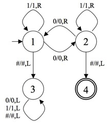
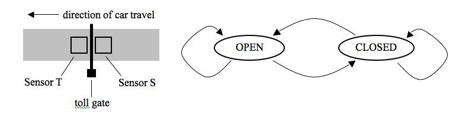
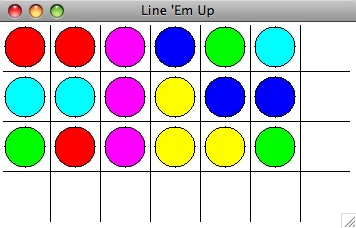

WRITTEN PROBLEMS (8 pts)
Hand these problems in on paper in class on the due date specified.

###1001010### ^ ###01010### ^ ###0000011111### ^

The gate opens when the sensor S is on and the sensor T is off. The gate closes when sensor S is off and sensor T is on. As a car approaches, it will cross over sensor S first, which should open the gate. It will continue on, being over both sensors, until it clears sensor S. This should close the gate. Then the car will proceed forward until it clears sensor T. If another car approaches, the gate should not open until the previous car clears sensor T.
Complete the state diagram for this toll gate with two states: OPEN and CLOSED. Determine what logical condition is required to move from one state to the other state, and what condition is required to stay in each of the states. Use the variables S and T to represent the sensors and the operators & and v for the logical operations AND and OR respectively. If you write S, this means that the S sensor is on (i.e. the car is over that sensor) and if you write ~S, this means that the S sensor is off (i.e. there is no car over that sensor).
Hand this in electronically using the Electronic Handin System by 11:59PM on the due date indicated.
The Line 'Em Up game consists of a 3 X 6 grid of circles of 6 colors, 3 of each. The goal is to rotate the lights horizontally and vertically until every column has a light of a single color. A sample game board is shown below. Note that there is an extra row and column in the game window.

The colors of the game are stored in an array of integers with 3 rows and 6 columns. Each cell stores a number from 0 to 5, representing the following colors:
0 = blue 2 = cyan 4 = magenta 1 = green 3 = red 5 = yellow
So for the window shown above, the corresponding array would be:
3 3 4 0 1 2 2 2 4 5 0 0 1 3 4 5 5 1
In this problem, you will complete a Python program so it draws the initial game. (You will complete the game in homework 10.) Start with the following Python main function:
from graphics import *
def main():
window = GraphWin("Line 'Em Up", 350, 200)
draw_lines(window)
filename = raw_input("Input name of data file: ")
colorarray = initialize_array(filename)
display_circles(window,colorarray)
raw_input("Press <ENTER&rt; to quit.")
window.close()
def draw_lines(window):
# you will complete this function
def initialize_array(filename):
# you will complete this function
def display_circles(window,colorarray):
# you will complete this function
main()
You will need to complete the three functions: draw_lines, initialize_array, and display_circles.
The draw_lines function should draw horizontal and vertical lines to divide the window up into 28 square regions, each region of size 50 X 50. Do this using a loop to draw the vertical lines and another loop to draw the horizontal lines, rather than drawing the 9 required lines individually.
The initialize_array function should open the given filename, create an empty array with 3 empty arrays inside of it (one for each row), and then read each color number from the file and store them in the array in the appropriate row. When you're done, you should have an array with 3 rows and 6 columns. Your function should return the array back to the main function.
The numbers for the array will be stored in a data file, one integer per line, row by row. Click HERE for a sample of the data file for the game shown above. You can right-click the link to save the file on your computer.
The draw_circles function should scan through the array of colors and draw a circle of the appropriate color in the appropriate position in the window. You should use loops here to simplify your code. Don't type in 18 separate circle commands.
HINT: Review the Python instructions for the Lights Out game. The functions you have to write here are similar to functions in the lab example.